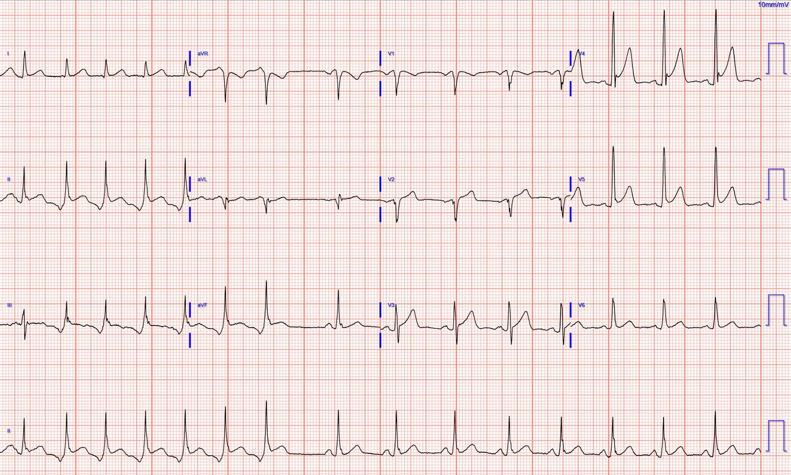
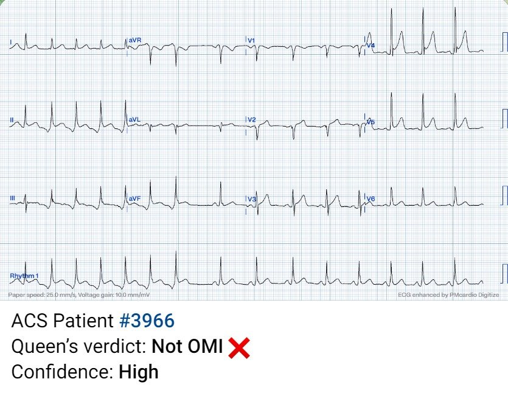
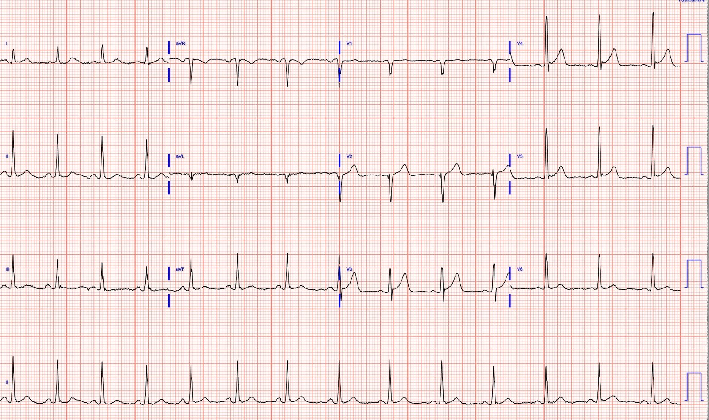
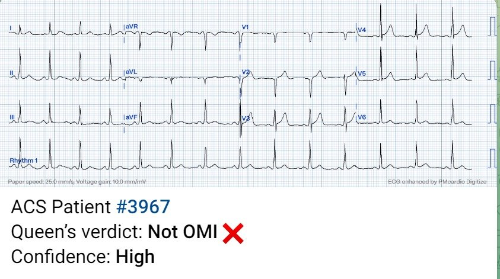
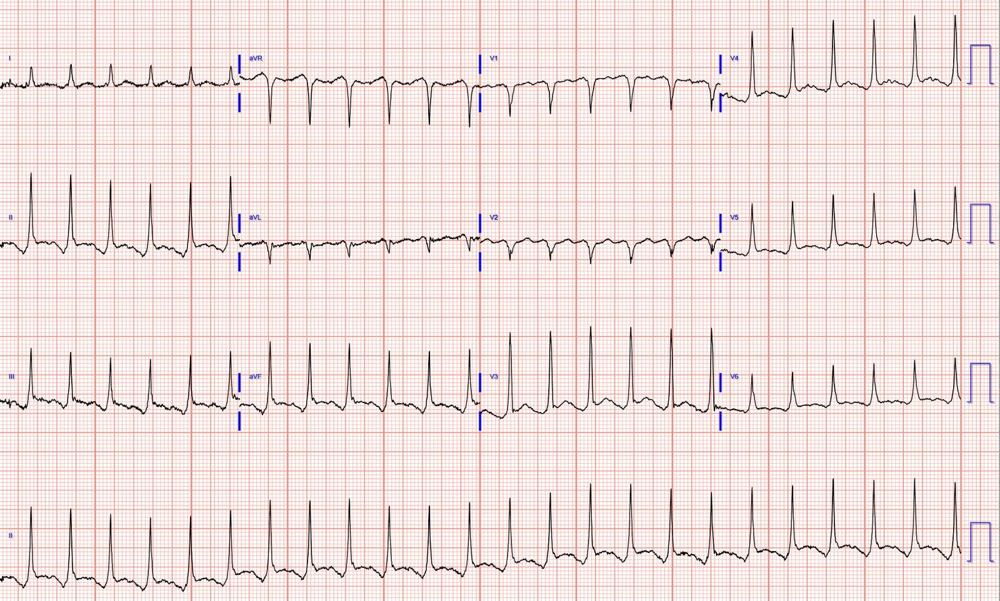
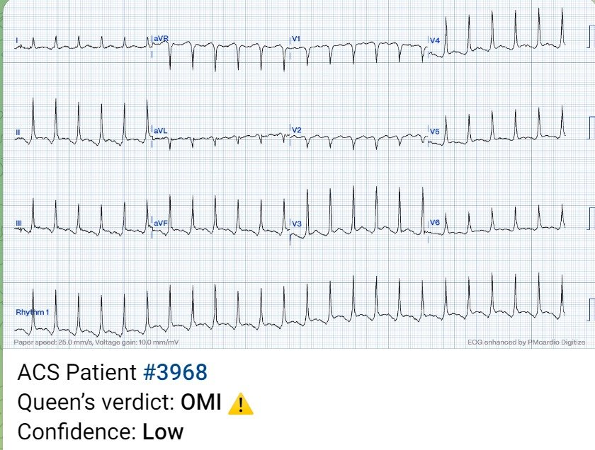
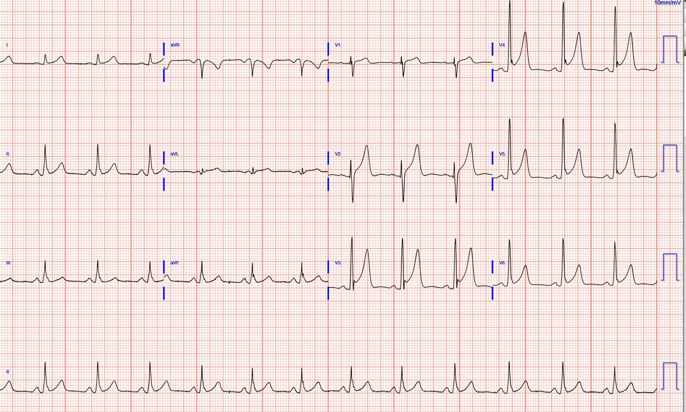
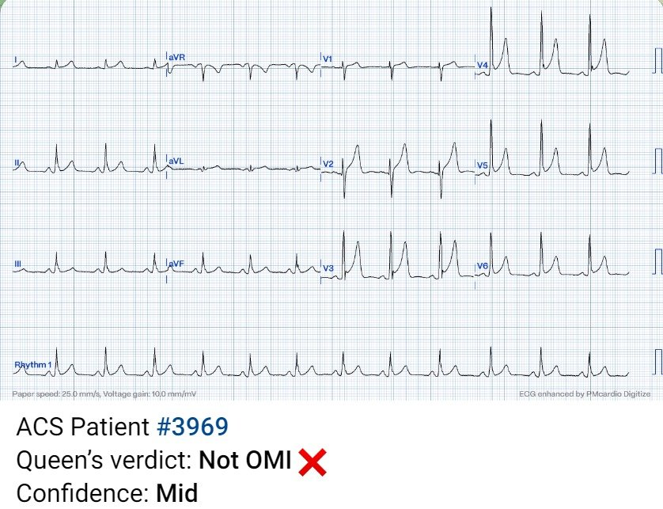
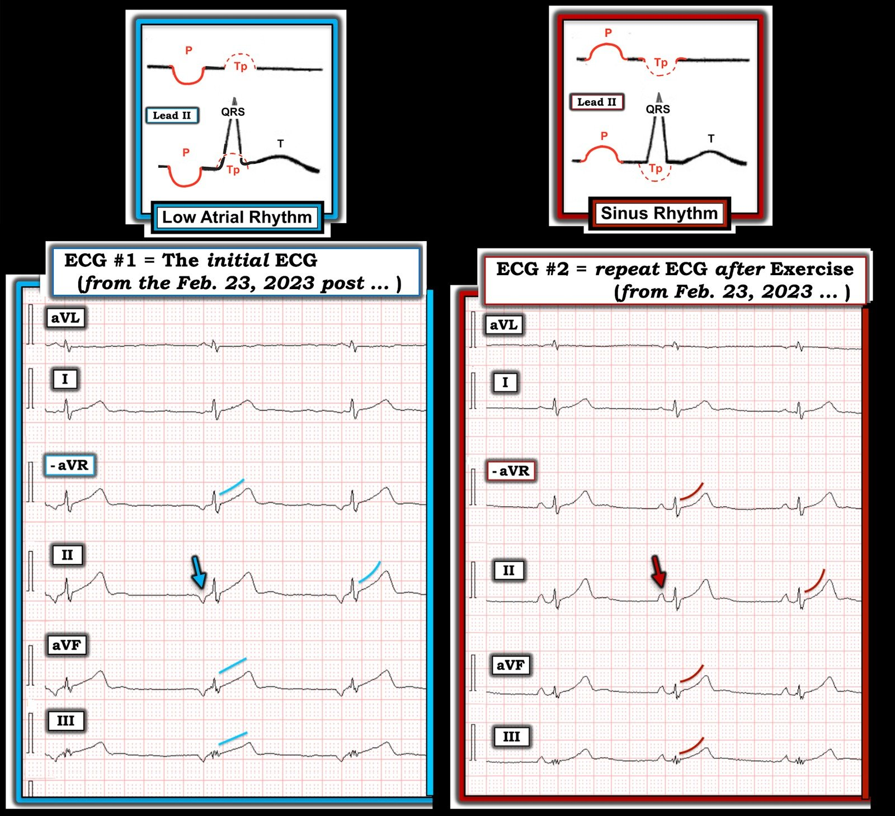
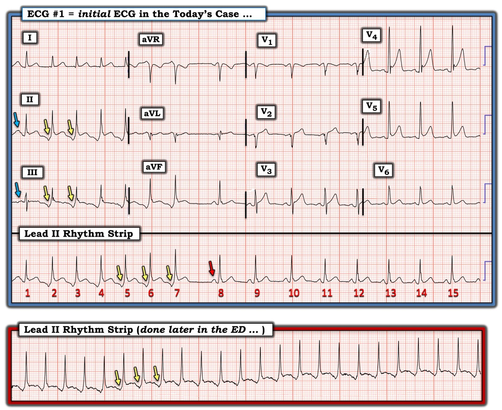

29/09/2023 — Nam giới ở độ tuổi 40 bị đau ngực cấp. Bạn nghĩ gì?
Bản dịch tiếng Việt của bài "A man in his 40s with acute chest pain. What do you think?" – Dr. Smith’s ECG Blog. Giữ nguyên toàn bộ 11 hình ảnh của bản gốc.
Gửi bởi một người giấu tên, viết bởi Pendell Meyers, Smith và Grauer duyệt lại
Một nam giới tuổi 40 đến khoa cấp cứu (ED), có tiền sử tăng huyết áp (HTN), đái tháo đường (DM) và hút thuốc, để được đánh giá cơn đau ngực cấp. Ông đang ăn trưa thì đột ngột thấy nặng ngực, mức độ 9/10, lan ra sau lưng, kèm vã mồ hôi và tê cả hai tay.
Điện tâm đồ lúc phân loại (triage):


Đây là một điện tâm đồ rất “thú vị”, ban đầu là nhịp nhanh nhĩ lạc chỗ (sóng P âm ở các chuyển đạo dưới, dẫn truyền 1:1 với các phức bộ QRS), sau đó tự hết, trở về nhịp xoang. Ở đoạn nhịp xoang nhìn thấy được, ta thấy ST chênh lên (STE) biến thể bình thường, có lẽ đạt tiêu chuẩn STEMI ở V4 và V5. Ở các chuyển đạo chi (limb leads), nơi ta thấy được nhịp nhĩ lạc chỗ trên điện tâm đồ này, ta thấy tình huống kinh điển: sóng P nhĩ lạc chỗ tạo ra ảo giác ST chênh lên thành dưới, nhiều khả năng do tái cực nhĩ bị phóng đại (“sóng Ta”). Tình huống này được đặt tên là “hiện tượng Emery (Emery phenomenon).”
Nói cách khác, “ST chênh lên” thành dưới là do nhịp bất thường, và hoàn toàn không mang ý nghĩa OMI hay STEMI. Đây là một hình ảnh giả OMI đã biết, mà chúng tôi đã trình bày trên blog nhiều lần.
Xem các ca tương tự sau:
A man in his 40s with epigastric pain and ST Elevation (Nam giới tuổi bốn mươi đau thượng vị và ST chênh lên)
A man in his sixties with chest pain (Nam giới tuổi sáu mươi đau ngực)
Why is there inferior ST elevation, and would you get posterior leads? (Vì sao có ST chênh lên thành dưới, và bạn có ghi thêm chuyển đạo phía sau không?)
Sudden CP and SOB with Inferior ST Elevation and in STE in V1. Is it inferior and RV OMI? (Đau ngực và khó thở đột ngột kèm ST chênh lên thành dưới và STE ở V1. Có phải OMI thành dưới và thất phải không?)
Đây là kết quả đọc của Queen of Hearts đối với điện tâm đồ trên:


Bệnh nhân có sẵn một điện tâm đồ nền để so sánh:




Trong thời gian đầu ở khoa cấp cứu, bệnh nhân nhiều lần vào rồi ra khỏi nhịp bất thường, và đây là một bản ghi đầy đủ 12 chuyển đạo của nhịp bất thường đó:




Đáng tiếc là hình ảnh này đã đánh lừa bác sĩ cấp cứu và bác sĩ tim mạch, khiến họ cho chụp mạch vành cấp cứu vì nghĩ là “STEMI thành dưới.”
Chụp mạch vành cho thấy các động mạch vành hoàn toàn bình thường.
Theo ghi nhận, nhịp trở về nhịp xoang sau khi tiêm metoprolol tĩnh mạch.
Siêu âm tim cấp cứu cho thấy phân suất tống máu (EF) bình thường, không có rối loạn vận động thành (WMA), chức năng van bình thường.
Ba lần xét nghiệm troponin độ nhạy cao liên tiếp đều dưới giới hạn phát hiện.
Điện tâm đồ ngày hôm sau:




BẠN CŨNG CÓ THỂ CÓ BOT AI PM Cardio!! (ỨNG DỤNG AI PM CARDIO OMI)
Nếu bạn muốn bot này giúp bạn chẩn đoán sớm OMI và cứu bệnh nhân cùng cơ tim của họ, bạn có thể đăng ký nhận phiên bản beta sớm của bot tại đây. Bot chưa được phát hành, nhưng đây là cách để bạn có tên trong danh sách.
https://share-eu1.hsforms.com/18cAH0ZK0RoiVG3RjC5dYdwfyfsg (biểu mẫu đăng ký nhận bản beta)
Điện giải và TSH bình thường.
Không phát hiện sử dụng ma túy, chất kích thích, v.v.
Đáng tiếc là bệnh nhân bị chẩn đoán nhầm là “SVT / rung nhĩ” và được cho dùng apixaban!!!
Hy vọng buổi khám ngoại trú chuyên khoa điện sinh lý (EP) sẽ hiểu ra và sửa lại điều đó.
Xem thêm các bài về sóng tái cực nhĩ:
K. Wang Video lecture: the Atrial Repolarization Wave (Ta Wave) (Bài giảng video của K. Wang: sóng tái cực nhĩ – sóng Ta)
Look at this ST Depression (Hãy nhìn đoạn ST chênh xuống này)
Atrial Repolarization Wave Mimicking ST Depression (Sóng tái cực nhĩ giả ST chênh xuống)
What is this ST Depression? (Hint: there are 2 etiologies) (Đoạn ST chênh xuống này là gì? – Gợi ý: có hai căn nguyên)

===================================
BÌNH LUẬN CỦA TÔI, bởi KEN GRAUER, MD (28/9/2023):
===================================
Nếu phải chọn một tiêu đề cho ca hôm nay — tôi sẽ chọn “Chuyện về 2 dấu hiệu”. Tôi thấy ca bệnh hấp dẫn này của Dr. Meyers độc đáo ở chỗ kể 2 mạch truyện:
- Mạch truyện #1: Vì sao ST chênh lên ở các chuyển đạo dưới và các chuyển đạo trước tim, vốn rất rõ trên điện tâm đồ ban đầu — lại không chỉ điểm một STEMI cấp?
- Mạch truyện #2: Nhịp nhanh cứ tái diễn cho tới khi bệnh nhân được điều trị bằng metoprolol tĩnh mạch là nhịp gì?
Để Hình 1 được rõ ràng — tôi đã chỉnh sửa lại hình của tôi trong bài ngày 23 tháng Hai năm 2023 của Dr. Smith’s ECG Blog, trong đó tôi đã minh họa hiện tượng Emery mà Dr. Meyers nhắc tới trong phần bàn luận xuất sắc của anh.


= = = = = = =
LƯU Ý: Lý do thứ tự các chuyển đạo chi trong Hình này khác thường (có dùng một chuyển đạo -aVR, kẹp giữa chuyển đạo I và II) — là vì 2 bản ghi này được ghi theo định dạng Cabrera (mà tôi đã ôn lại trong Bình luận của tôi ở cuối trang của bài ngày 24 tháng Tư năm 2022).
=====================================
Điều gì xảy ra trong hiện tượng Emery?
2 hình minh họa sơ đồ ở trên cùng của Hình 1 — giải thích cơ chế lý thuyết của hiện tượng Emery.
- Sóng tái cực nhĩ (tức là sóng T của sóng P) luôn luôn có mặt trên điện tâm đồ. Khi có nhịp xoang, thời điểm của Tp phần lớn trùng với thời điểm của phức bộ QRS — và do đó không nhận thấy được trên điện tâm đồ (nửa vòng tròn chấm chấm màu ĐỎ, trong hình minh họa sơ đồ phía trên bên PHẢI của Hình 1).
- Lưu ý rằng Tp có hướng ngược với sóng P. Vì vậy, trong nhịp xoang bình thường (mà theo định nghĩa, sóng P sẽ dương ở chuyển đạo II) — Tp sẽ âm, và nằm bên trong phức bộ QRS.
- NHƯNG — NẾU sóng P ở chuyển đạo II âm (như có thể gặp trong hoặc nhịp nhĩ thấp hoặc nhịp bộ nối) — thì Tp sẽ dương (nửa vòng tròn chấm chấm màu ĐỎ, trong sơ đồ phía trên bên TRÁI của Hình 1). Nếu sóng Tp có kích thước lớn và dương — nó có thể làm biến dạng phần cuối của phức bộ QRS. Và NẾU khoảng PR của một sóng P âm, lớn lại ngắn (tức là ngắn hơn so với trong hình minh họa sơ đồ phía trên bên TRÁI) — thì Tp dương sẽ bị đẩy dịch sang phải, tạo ra ấn tượng giả về “ST chênh lên”.
Những tác động này của một sóng P âm, lớn với khoảng PR ngắn lên đoạn ST theo sau — được thấy trên điện tâm đồ #1 của Hình 1 (chỉnh sửa từ bài ngày 23 tháng Hai năm 2023).
- Các đường XANH chéo góc ở bên TRÁI của Hình 1 — cho thấy đoạn ST thẳng đuỗn, và hình ảnh trông như ST chênh lên đáng kể ở các chuyển đạo dưới của điện tâm đồ #1.
- Về sau trong ca ngày 23 tháng Hai năm 2023 này — nhịp xoang trở lại (mũi tên ĐỎ trong hình bên PHẢI, làm nổi bật sóng P dương ở chuyển đạo II — kèm theo đoạn ST thẳng đuỗn và ST chênh lên ở các chuyển đạo dưới vốn thấy ở hình bên TRÁI gần như hết hẳn).
=====================================
Áp dụng hiện tượng Emery vào CA BỆNH hôm nay:
Để Hình 2 được rõ ràng — tôi đã tái hiện và đánh dấu điện tâm đồ ban đầu trong ca hôm nay của Dr. Meyers. Lưu ý rằng tôi cũng thêm vào đó dải nhịp chuyển đạo II dài được ghi muộn hơn một chút trong ca hôm nay, khi rối loạn nhịp nhanh tái phát.
- “Cái hay” của điện tâm đồ #1 trong ca hôm nay — là nó bắt được 7 nhát nhịp nhanh với sóng P âm ở mỗi chuyển đạo dưới (các mũi tên VÀNG) — sau đó nhịp xoang trở lại, với sóng P dương bắt đầu từ nhát #8 trên dải nhịp chuyển đạo II dài (mũi tên ĐỎ phía trên sóng P dương đứng trước nhát #8).
- Lưu ý rằng sóng P âm ở mỗi chuyển đạo dưới trong 7 nhát đầu — biểu hiện thành một sóng âm khá lớn với khoảng PR rất ngắn.
- Đặc biệt lưu ý rằng hình ảnh trông như “ST chênh lên” ở mỗi chuyển đạo dưới trong 7 nhát đầu này — biến mất đột ngột ngay khi nhịp xoang trở lại (thấy rất rõ ở đây khi dõi theo đoạn ST trên dải nhịp chuyển đạo II dài của điện tâm đồ #1). Đây chính là hiện tượng Emery. Không hề có ST chênh lên thật sự ở các chuyển đạo dưới — chỉ có “ST chênh lên giả” do sóng Tp dương, lớn tạo ra trong 7 nhát đầu, khi các chuyển đạo dưới có sóng P âm, lớn với khoảng PR ngắn!
- Cuối cùng — Lưu ý khía điểm J rất rõ, kèm ST chênh lên dốc lên ở chuyển đạo V4, gần như đủ để chẩn đoán một biến thể tái cực lành tính.


=====================================
Còn nhịp nhanh thì sao?
Câu hỏi đặt ra là nhịp nhanh tái diễn thấy trong ca hôm nay là gì, cho tới khi điều trị bằng metoprolol tĩnh mạch đã ức chế được nhịp này?
- Như mọi khi — tôi ưa chuộng việc đánh giá 5 thông số nằm trong cách tiếp cận Ps, Qs, 3R, vì đây là hệ thống thân thiện với người dùng nhất và tiết kiệm thời gian nhất để đọc nhịp chính xác (Để biết thêm về Ps, Qs, 3R — Xem bài ngày 26 tháng Một năm 2023 của tôi trên Dr. Smith’s ECG Blog).
Áp dụng cách tiếp cận Ps, Qs, 3R cho dải nhịp chuyển đạo II dài nằm ở phía dưới điện tâm đồ #1 trong Hình 2:
- 7 nhát đầu có vẻ cho thấy một nhịp khá đều (Regular) — với phức bộ QRS hẹp — tần số (Rate) ~115/phút (khoảng R-R dài ~2.6 ô lớn) — với sóng P âm liên quan (Related) với phức bộ QRS kế bên, khoảng PR ngắn và hằng định.
ĐIỂM THEN CHỐT #1: Có chẩn đoán phân biệt cho nhịp SVT (nhịp nhanh trên thất – SupraVentricular Tachycardia) đều mà chúng ta vừa mô tả — phần lớn dựa vào sự có mặt và bản chất của hoạt động nhĩ (Để biết thêm về cách phân biệt các nhịp SVT khác nhau — Xem Bình luận của tôi ở cuối trang của bài ngày 6 tháng Ba năm 2020 trên Dr. Smith’s ECG Blog).
- Nhịp SVT đều của ca hôm nay có thể là nhịp nhanh nhĩ lạc chỗ (ATach) — hoặc nhịp nhanh bộ nối tự động. (LƯU Ý: Nhịp nhanh bộ nối tự động không phổ biến. ATach gặp thường xuyên hơn nhiều trong thực hành không chọn lọc. Việc khoảng PR của sóng P âm này ở chuyển đạo II ngắn không giúp phân biệt 2 thực thể này. Xử trí cấp cứu ban đầu là tương tự cho cả hai thực thể).
- Một khả năng khác — Nhịp SVT đều của ca hôm nay có thể là AVNRT thể “nhanh-chậm” ít gặp hơn nhiều (như tôi minh họa bằng giản đồ bậc thang trong Hình 3 của Bình luận của tôi ở bài ngày 6 tháng Ba năm 2020). Và mặc dù điều trị ban đầu cho cả 3 nhịp SVT này có thể tương tự nhau (tức là metoprolol tĩnh mạch, vốn đã thành công trong ca hôm nay, có lẽ sẽ có tác dụng với bất kỳ SVT nào trong số này) — việc xử trí lâu dài ATach so với SVT vào lại thể “nhanh-chậm” có thể khác nhau.
ĐIỂM THEN CHỐT #2: BẠN có để ý đợt SVT 7 nhát trên dải nhịp chuyển đạo II dài của điện tâm đồ #1 đã bắt đầu NHƯ THẾ NÀO không? Một trong những điểm then chốt hay bị bỏ qua nhất khi đọc nhịp nhanh — là không xem nhịp nhanh bắt đầu và kết thúc NHƯ THẾ NÀO. Phải thừa nhận — chúng ta thường không có may mắn được thấy thông tin này. Tuy nhiên, trên điện tâm đồ #1 — Ta thấy cả lúc khởi phát lẫn lúc kết thúc của SVT!
- Các mũi tên XANH mà tôi vẽ ở ngay đầu chuyển đạo II và III của điện tâm đồ #1 — làm nổi bật rằng nhát #1 trên dải nhịp chuyển đạo II dài là khác biệt! Do vị trí điện tâm đồ này bắt đầu ghi — tiếc là ta không thấy phức bộ QRS xảy ra ngay trước nhát #1. Nhưng rõ ràng các sóng dưới các mũi tên XANH này ở chuyển đạo II và III khác với các sóng dưới 2 mũi tên VÀNG theo sau. (Hình dạng QRS của nhát #1, nhất là ở chuyển đạo III — cũng khác với hình dạng QRS của các nhát #2-đến-7 theo sau).
- Hình dạng QRS khác biệt của nhát #1 có lẽ là kết quả của dẫn truyền lệch hướng.
- Theo tôi, sóng khác biệt ( = sóng T và/hoặc sóng T có PAC chồng lên) dưới 2 mũi tên XANH gợi ý SVT hôm nay khởi phát đột ngột, nhiều khả năng do một PAC. Ban đầu điều này gợi ý cho tôi rằng thay vì ATach — cơ chế của SVT hôm nay có thể là AVNRT thể “nhanh-chậm”.
- ĐIỀU CỐT LÕI: Những điểm trên là các điểm nâng cao mang tính học thuật, vì ta không thể biết điều gì đã xảy ra với nhát #1 khi không thấy phức bộ QRS trước nhát này. Điểm CỦA TÔI có ý nghĩa đối với việc đọc rối loạn nhịp tối ưu — là luôn tìm xem có “chỗ ngắt” trong nhịp lúc khởi phát hoặc kết thúc nhịp nhanh hay không — vì nếu có, điều này thường sẽ cho bạn biết chẩn đoán cụ thể!
ĐIỂM THEN CHỐT #3: ATach lạc chỗ phát sinh từ một ổ nhĩ độc lập. Đặc điểm của nó là: i) hình dạng sóng P khác với hình dạng sóng P xoang (mũi tên VÀNG so với mũi tên ĐỎ trên điện tâm đồ #1); ii) Khác với các nhịp SVT vào lại thường gặp (tức là AVNRT thể “chậm-nhanh” và “nhanh-chậm”; và AVRT) vốn thường khởi phát bằng một hoặc nhiều PAC — ATach thường bắt đầu bằng hiện tượng “khởi động” (warm-up) (tức là ổ nhĩ lạc chỗ tăng tốc dần) — và ATach thường kết thúc bằng hiện tượng “hạ nhiệt” (cool-down) (tức là ổ nhĩ lạc chỗ chậm dần).
- BẠN có để ý rằng tần số của SVT hôm nay nhanh hơn đáng kể trong cơn SVT kéo dài (tức là ~140/phút trên chuyển đạo II dài ghi muộn hơn ở khoa cấp cứu — so với ~115/phút của đợt 7 nhát trên điện tâm đồ #1)?
- Việc tần số của SVT hôm nay nhanh hơn khi nhịp kéo dài — nhưng lại chậm dần ngay trước khi chuyển về nhịp xoang (tức là ở nhát #8 trên chuyển đạo II dài của điện tâm đồ #1) — gợi ý có hiện tượng “hạ nhiệt” , khi SVT hôm nay chậm dần cho đến khi tự chuyển về nhịp xoang. Điều này phù hợp hơn nhiều với ATach lạc chỗ là căn nguyên của SVT hôm nay.